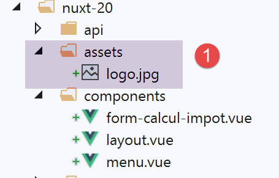
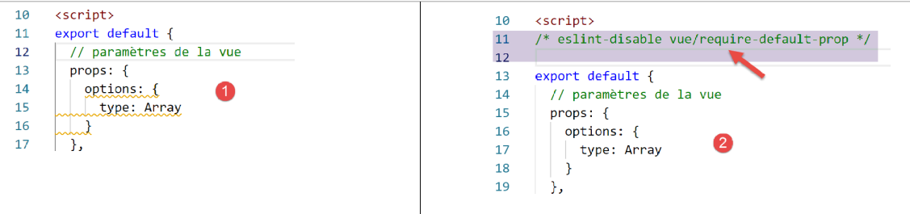
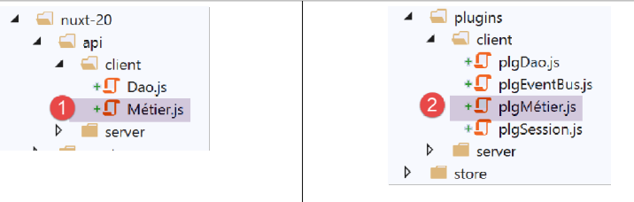
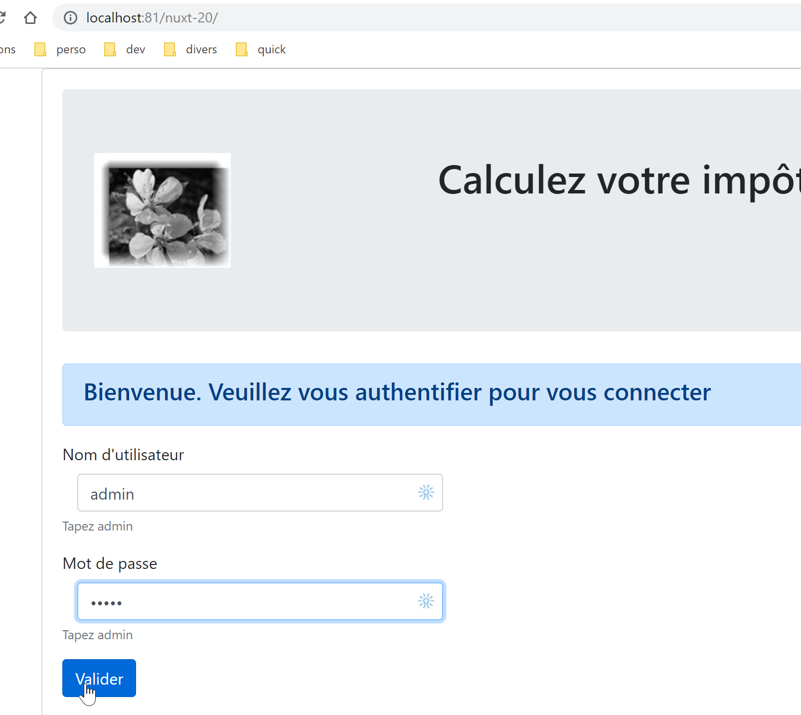

17. Exemple [nuxt-20] : portage de l’exemple [vuejs-22]
17.1. Présentation
Nous nous proposons ici de porter l’exemple [vuejs-22] qui était une application [vue.js] de type SPA, dans un contexte [nuxt] SSR. [vuejs-22] était une application cliente du serveur de calcul de l’impôt qui présentait les vues suivantes :
La 1ère vue est la vue d’authentification :

La seconde vue est celle du calcul de l’impôt :

La 3ième vue est celle qui affiche la liste des simulations faites par l’utilisateur :

L’écran ci-dessus montre qu’on peut supprimer la simulation n° 1. On obtient alors la vue suivante :

Si on supprime maintenant la dernière simulation, on obtient la nouvelle vue suivante :

Nous allons porter l’application [vuejs-22] vers l’application [nuxt-20] de façon progressive. Nous n’expliquerons pas de nouveau les codes de [vuejs-22]. Le lecteur est invité à relire le document |Introduction au framework VUE.JS par l’exemple|. Les différentes étapes devraient montrer les différences entre une application [vuejs] et une application [nuxt].
17.2. étape 1
Le projet [nuxt-20] est initialement obtenu par recopie du projet [nuxt-12]. Celui-ci est en effet un bon point de départ :
- il sait dialoguer avec le serveur de calcul de l’impôt ;
- il gère correctement les erreurs que celui-ci envoie ;
- les client et serveur [nuxt] savent communiquer via une session [nuxt] ;
On a donc une bonne infrastructure de départ. Notre principal travail devrait être de modifier :
- les pages. On prendra celles du projet [vuejs-22] qu’il faudra adapter au nouvel environnement ;
- la gestion du store. Des informations supplémentaires devraient apparaître (liste des simulations) et d’autres pourraient devenir inutiles ;
- la gestion du routage du client et du serveur [nuxt] ;
Donc tout d’abord, on crée le projet [nuxt-20] en recopiant le projet [nuxt-12] :

Puis on supprime les pages et composants devenus inutiles [2] :
- le composant [components/navigation] disparaît ;
- le layout [layout/default] disparaît ;
- les pages [index, authentification, get-admindata, fin-session] disparaissent ;
Puis on intègre dans [nuxt-20] des éléments de [vuejs-22] [3] :
- les trois pages [Authentification, CalculImpot, ListeSimulations] de l’application [vuejs-22] vont dans le dossier [pages] ;
- les composants [FormCalculImpot, Menu, Layout] de l’application [vuejs-22] vont dans le dossier [components] ;
- la page [Main] de [vuejs-22] qui servait de [layout] à l’application [vuejs-22] va dans le dossier [layouts] ;
On renomme les éléments intégrés [4] :

- dans [layouts], [Main] est devenue [default] puisque c’est le nom par défaut du layout d’une application [nuxt] ;
- dans [pages], la page [Authentification] est devenue [index], car [Authentification] jouait ce rôle dans l’application [vuejs-22] ;
A ce point là, on peut faire une compilation du projet pour voir les premières erreurs. On modifie le fichier [nuxt.config] de l’exemple [nuxt-12] afin d’exécuter désormais [nuxt-20] :
export default {
mode: 'universal',
/*
** Headers of the page
*/
head: {
title: 'Introduction à [nuxt.js]',
meta: [
{ charset: 'utf-8' },
{ name: 'viewport', content: 'width=device-width, initial-scale=1' },
{
hid: 'description',
name: 'description',
content: 'ssr routing loading asyncdata middleware plugins store'
}
],
link: [{ rel: 'icon', type: 'image/x-icon', href: '/favicon.ico' }]
},
/*
** Customize the progress-bar color
*/
loading: false,
/*
** Global CSS
*/
css: [],
/*
** Plugins to load before mounting the App
*/
plugins: [
{ src: '@/plugins/client/plgSession', mode: 'client' },
{ src: '@/plugins/server/plgSession', mode: 'server' },
{ src: '@/plugins/client/plgDao', mode: 'client' },
{ src: '@/plugins/server/plgDao', mode: 'server' },
{ src: '@/plugins/client/plgEventBus', mode: 'client' }
],
/*
** Nuxt.js dev-modules
*/
buildModules: [
// Doc: https://github.com/nuxt-community/eslint-module
'@nuxtjs/eslint-module'
],
/*
** Nuxt.js modules
*/
modules: [
// Doc: https://bootstrap-vue.js.org
'bootstrap-vue/nuxt',
// Doc: https://axios.nuxtjs.org/usage
'@nuxtjs/axios',
// https://www.npmjs.com/package/cookie-universal-nuxt
'cookie-universal-nuxt'
],
/*
** Axios module configuration
** See https://axios.nuxtjs.org/options
*/
axios: {},
/*
** Build configuration
*/
build: {
/*
** You can extend webpack config here
*/
extend(config, ctx) {}
},
// répertoire du code source
srcDir: 'nuxt-20',
// routeur
router: {
// racine des URL de l'application
base: '/nuxt-20/',
// middleware de routage
middleware: ['routing']
},
// serveur
server: {
// port de service, 3000 par défaut
port: 81,
// adresses réseau écoutées, par défaut localhost : 127.0.0.1
// 0.0.0.0 = toutes les adresses réseau de la machine
host: 'localhost'
},
// environnement
env: {
// configuration axios
timeout: 2000,
withCredentials: true,
baseURL: 'http://localhost/php7/scripts-web/impots/version-14',
// configuration du cookie de session [nuxt]
maxAge: 60 * 5
}
}
On fait ensuite un [build] du projet :

Les erreurs signalées sont les suivantes :
- l’erreur de la ligne 1 indique qu’on référence une image inexistante. On la récupèrera dans [vuejs-22] ;
- l’erreur de la ligne 2 montre que le composant [./FormCalculImpot] n’existe pas. Effectivement, ce composant est désormais dans [@/components/form-calcul-impot] ;
- les erreurs des lignes [3-5] montrent que le composant [./Layout] n’existe pas. Effectivement, ce composant est désormais dans [@/components/layout] ;
- les erreurs des lignes [6-7] montrent que le composant [./Menu] n’existe pas. Effectivement, il s’appelle maintenant [@/components/menu] ;
On ajoute l’image [assets/logo.jpg] au projet [nuxt-20] :

Par ailleurs, dans toutes les pages on va corriger le chemin des composants. Prenons l’exemple de la page [calcul-impot] :
<!-- définition HTML de la vue -->
<template>
<div>
<Layout :left="true" :right="true">
<!-- formulaire de calcul de l'impôt à droite -->
<FormCalculImpot slot="right" @resultatObtenu="handleResultatObtenu" />
<!-- menu de navigation à gauche -->
<Menu slot="left" :options="options" />
</Layout>
<!-- zone d'affichage des résultat du calcul de l'impôt sous le formulaire -->
<b-row v-if="résultatObtenu" class="mt-3">
<!-- zone de trois colonnes vide -->
<b-col sm="3" />
<!-- zone de neuf colonnes -->
<b-col sm="9">
<b-alert show variant="success">
<span v-html="résultat"></span>
</b-alert>
</b-col>
</b-row>
</div>
</template>
<script>
// imports
import FormCalculImpot from './FormCalculImpot'
import Menu from './Menu'
import Layout from './Layout'
export default {
// composants utilisés
components: {
Layout,
FormCalculImpot,
Menu
},
Les trois [import] des lignes 26-28 deviennent :
// imports
import FormCalculImpot from '@/components/form-calcul-impot'
import Menu from '@/components/menu'
import Layout from '@/components/layout'
On vérifie et éventuellement corrige ainsi les [import] de tous les composants, layouts et pages. Une fois ces corrections faites, on peut tenter un nouveau [build]. Normalement il n’y a plus d’erreurs.
On peut alors tenter une exécution :

Des erreurs apparaissent :
On voit que la commande [dev] alliée au module [eslint] est plus stricte, au niveau syntaxique, que la commande [build]. Ici, elle réclame que l’opérateur de comparaison [!=] soit écrit [!==] qui est un opérateur plus strict (il vérifie également le type des opérandes). Ces erreurs se produisent dans la page [index.vue].
On corrige les erreurs ci-dessus et on relance l’exécution du projet. On a alors un warning du module [eslint] :

On corrige cette erreur avec le [Quick fix] du module [eslint] [2].
On relance l’exécution du projet. On n’a plus d’erreur de compilation. On demande alors l’URL [http://localhost:81/nuxt-20/] avec un navigateur. On obtient une erreur d’exécution :

L’erreur se trouve dans [index.vue] [2]. L’erreur [1] vient du fait que dans [vuejs-22], la couche [dao] était disponible dans [this.$dao] alors que dans [nuxt-12] dont nous avons adopté l’infrastructure, elle est disponible dans la fonction [this.$dao()].
L’erreur est dans la fonction [created] du cycle de vie de la page [index] :

Pour l’instant, on se contente de renommer [created] en [created2] pour que la fonction du cycle de vie [created] ne soit pas exécutée [3].
On sauve la modification et on recharge la page [index] dans le navigateur. Cette fois-ci c’est bon :

17.3. étape 2
Les pages du projet [vuejs-22] utilisaient les éléments injectés suivants :
- $dao : pour la couche [dao] du client [vue.js] ;
- $session : pour une session stockée dans le [localStorage] du navigateur ;
Ces éléments n’existent plus dans l’infrastructure du projet [nuxt-12] que nous avons recopiée :
- il y a désormais deux couches [dao], l’une pour le client [nuxt], l’autre pour le serveur [nuxt]. Toutes deux sont disponibles via une fonction injectée appelée [$dao]. Cela signifie que dans les pages de l’application [this.$dao] doit être remplacé par [this.$dao()] ;
- la session [nuxt] gérée par l’application [nuxt-20] n’a plus rien à voir avec l’objet [$session] de l’application [vuejs-22] où il n’y avait pas de notion de cookie de session. Néanmoins, elles ont une fonctionnalité analogue : stocker des informations persistantes au fil des actions de l’utilisateur. La session [nuxt] stocke les informations dans le store plutôt que directement dans la session. Dans les pages de l’application [this.$session] doit être remplacé par [this.$store] lorsqu’il s’agit de mémoriser des informations dans la session et par [this.$session()] lorsqu’il s’agit de manipuler la session elle-même ;
- pour connaître l’état d’une propriété P du store, il faudra écrire [this.$store.state.P] ;
- pour changer la propriété P du store, il faudra écrire [this.$store.commit(‘replace’, {P:value}] ;
Nous faisons ces modifications dans la page [index] :
<!-- définition HTML de la vue -->
<template>
<Layout :left="false" :right="true">
<template slot="right">
<!-- formulaire HTML - on poste ses valeurs avec l'action [authentifier-utilisateur] -->
<b-form @submit.prevent="login">
<!-- titre -->
<b-alert show variant="primary">
<h4>Bienvenue. Veuillez vous authentifier pour vous connecter</h4>
</b-alert>
<!-- 1ère ligne -->
<b-form-group label="Nom d'utilisateur" label-for="user" label-cols="3">
<!-- zone de saisie user -->
<b-col cols="6">
<b-form-input id="user" v-model="user" type="text" placeholder="Nom d'utilisateur" />
</b-col>
</b-form-group>
<!-- 2ième ligne -->
<b-form-group label="Mot de passe" label-for="password" label-cols="3">
<!-- zone de saisie password -->
<b-col cols="6">
<b-input id="password" v-model="password" type="password" placeholder="Mot de passe" />
</b-col>
</b-form-group>
<!-- 3ième ligne -->
<b-alert v-if="showError" show variant="danger" class="mt-3">L'erreur suivante s'est produite : {{ message }}</b-alert>
<!-- bouton de type [submit] sur une 3ième ligne -->
<b-row>
<b-col cols="2">
<b-button :disabled="!valid" variant="primary" type="submit">Valider</b-button>
</b-col>
</b-row>
</b-form>
</template>
</Layout>
</template>
<!-- dynamique de la vue -->
<script>
/* eslint-disable no-console */
import Layout from '@/components/layout'
export default {
// composants utilisés
components: {
Layout
},
// état du composant
data() {
return {
// utilisateur
user: '',
// son mot de passe
password: '',
// contrôle l'affichage d'un msg d'erreur
showError: false,
// le message d'erreur
message: ''
}
},
// propriétés calculées
computed: {
// saisies valides
valid() {
return this.user && this.password && this.$store.state.started
}
},
// cycle de vie : le composant vient d'être créé
mounted() {
// eslint-disable-next-line
console.log("Authentification mounted");
// l'utilisateur peut-il faire des simulations ?
if (this.$store.state.started && this.$store.state.authenticated && this.$métier.taxAdminData) {
// alors l'utilisateur peut faire des simulations
this.$router.push({ name: 'calculImpot' })
// retour à la boucle événementielle
return
}
// si la session jSON a déjà été démarrée, on ne la redémarre pas de nouveau
if (!this.$store.state.started) {
// début attente
this.$emit('loading', true)
// on initialise la session avec le serveur - requête asynchrone
// on utilise la promesse rendue par les méthodes de la couche [dao]
this.$dao()
// on initialise une session jSON
.initSession()
// on a obtenu la réponse
.then((response) => {
// fin attente
this.$emit('loading', false)
// analyse de la réponse
if (response.état !== 700) {
// on affiche l'erreur
this.message = response.réponse
this.showError = true
// retour à la boucle événementielle
return
}
// la session a démarré
this.$store.commit('replace', { started: true })
console.log('[authentification], session=', this.$session())
})
// en cas d'erreur
.catch((error) => {
// on remonte l'erreur à la vue [Main]
this.$emit('error', error)
})
// dans tous les cas
.finally(() => {
// on sauvegarde la session
this.$session().save()
})
}
},
// gestionnaires d'évts
methods: {
// ----------- authentification
async login() {
try {
// début attente
this.$emit('loading', true)
// on n'est pas encore authentifié
this.$store.commit('replace', { authenticated: false })
// authentification bloquante auprès du serveur
const response = await this.$dao().authentifierUtilisateur(this.user, this.password)
// fin du chargement
this.$emit('loading', false)
// analyse de la réponse du serveur
if (response.état !== 200) {
// on affiche l'erreur
this.message = response.réponse
this.showError = true
// retour à la boucle événementielle
return
}
// pas d'erreur
this.showError = false
// on est authentifié
this.$store.commit('replace', { authenticated: true })
// --------- on demande maintenant les données de l'administration fiscale
// au départ, pas de donnée
this.$métier.setTaxAdminData(null)
// début attente
this.$emit('loading', true)
// demande bloquante auprès du serveur
const response2 = await this.$dao().getAdminData()
// fin du chargement
this.$emit('loading', false)
// analyse de la réponse
if (response2.état !== 1000) {
// on affiche l'erreur
this.message = response2.réponse
this.showError = true
// retour à la boucle événementielle
return
}
// pas d'erreur
this.showError = false
// on mémorise dans la couche [métier] la donnée reçue
this.$métier.setTaxAdminData(response2.réponse)
// on peut passer au calcul de l'impôt
this.$router.push({ name: 'calculImpot' })
} catch (error) {
// on remonte l'erreur au composant principal
this.$emit('error', error)
} finally {
// maj store
this.$store.commit('replace', { métier: this.$métier })
// on sauvegarde la session
this.$session().save()
}
}
}
}
</script>
Notons les points suivants :
- ligne 69 : la fonction [created2] a été renommée [mounted], ceci pour que le serveur [nuxt] ne l’exécute pas (il n’exécute ni [beforeMount] ni [mounted]). Seul le client [nuxt] l’exécutera comme c’était le cas avec l’exemple [vuejs-22] ;
- ligne 73 : on référence [this.$métier] qui pour l’instant n’existe pas ;
- ligne 75 : nous n’avons jamais utilisé cette méthode dans une application [nuxt]. Il faudra voir si elle fonctionne dans un contexte [nuxt] ;
- ligne 112, 172 : dans [vuejs-22], la session du projet était sauvegardée de cette façon. Avec le projet [nuxt-20], la méthode [save] doit recevoir le contexte courant. On sait que dans une page [nuxt], l’objet [context] est disponible dans [this.$nuxt.context] ;
Les lignes 112 et 172 sont donc réécrites de la façon suivante :
this.$session().save(this.$nuxt.context)
On notera que ce code n’est pas optimisé. Plutôt que d’utiliser plusieurs fois la fonction [this.$session()], il serait préférable d’écrire :
const session=this.$session()
puis utiliser ensuite la variable [session]. On peut tenir le même raisonnement pour la fonction [this.$dao()].
Ces corrections faites, nous pouvons recharger l’URL [http://localhost:81/nuxt-20/] avec un navigateur. Nous obtenons toujours la même page que précédemment :

Regardons les logs du navigateur :

Le log [1] est le dernier log fait par le client [nuxt]. En [2], on voit que la propriété [started] est à [vrai], ce qui veut dire que la fonction [mounted] a réussi à démarrer une session jSON avec le serveur de calcul de l’impôt. On voit également que le store a des propriétés qu’il faudra soit abandonner soit renommer. Rappelons que nous utilisons le store de l’exemple [nuxt-12].
Maintenant redemandons l’URL [http://localhost:81/nuxt-20/] alors que le serveur de calcul de l’impôt n’est pas lancé. On prend soin tout d’abord de supprimer le cookie de la session [nuxt] :

La copie d’écran ci-dessus est une copie d’écran Chrome. Ceci fait, l’URL [http://localhost:81/nuxt-20/] donne le résultat suivant :

L’erreur était correctement gérée par le projet [vuejs-22]. Elle reste correctement gérée par le projet [nuxt-20].
17.4. étape 3
Maintenant que nous avons la page d’authentification, il faut regarder le code exécuté lorsque l’utilisateur clique sur le bouton [Valider] :
// gestionnaires d'évts
methods: {
// ----------- authentification
async login() {
try {
// début attente
this.$emit('loading', true)
// on n'est pas encore authentifié
this.$store.commit('replace', { authenticated: false })
// authentification bloquante auprès du serveur
const response = await this.$dao().authentifierUtilisateur(this.user, this.password)
// fin du chargement
this.$emit('loading', false)
// analyse de la réponse du serveur
if (response.état !== 200) {
// on affiche l'erreur
this.message = response.réponse
this.showError = true
// retour à la boucle événementielle
return
}
// pas d'erreur
this.showError = false
// on est authentifié
this.$store.commit('replace', { authenticated: true })
// --------- on demande maintenant les données de l'administration fiscale
// au départ, pas de donnée
this.$métier.setTaxAdminData(null)
// début attente
this.$emit('loading', true)
// demande bloquante auprès du serveur
const response2 = await this.$dao().getAdminData()
// fin du chargement
this.$emit('loading', false)
// analyse de la réponse
if (response2.état !== 1000) {
// on affiche l'erreur
this.message = response2.réponse
this.showError = true
// retour à la boucle événementielle
return
}
// pas d'erreur
this.showError = false
// on mémorise dans la couche [métier] la donnée reçue
this.$métier.setTaxAdminData(response2.réponse)
// on peut passer au calcul de l'impôt
this.$router.push({ name: 'calculImpot' })
} catch (error) {
// on remonte l'erreur au composant principal
this.$emit('error', error)
} finally {
// maj store
this.$store.commit('replace', { métier: this.$métier })
// on sauvegarde la session
this.$session().save(this.$nuxt.context)
}
}
}
Le principal problème ici semble être l’absence de la donnée [this.$métier]. Pour y remédier nous allons :
- inclure la classe [Métier] de l’exemple [vuejs-22]. Nous la mettrons dans le dossier [api] ;
- injecter une fonction [$métier] dans le contexte du client [nuxt] qui donnera accès à cette classe ;
Tout d’abord la copie de la classe [Métier] dans le dossier [api] :

Une fois la classe [Métier] présente dans le projet, on crée un nouveau plugin pour le client [nuxt]. Ce plugin appelé [pluginMétier] va injecter une fonction [$métier] qui donnera accès à la classe [Métier] :
/* eslint-disable no-console */
// on crée un point d'accès à la couche [métier]
import Métier from '@/api/client/Métier'
export default (context, inject) => {
// instanciation de la couche [métier]
const métier = new Métier()
// injection d'une fonction [$métier] dans le contexte
inject('métier', () => métier)
// log
console.log('[fonction client $métier créée]')
}
Ceci fait, nous pouvons corriger la page [index] :
// cycle de vie : le composant vient d'être créé
mounted() {
// eslint-disable-next-line
console.log("Authentification mounted");
// l'utilisateur peut-il faire des simulations ?
if (this.$store.state.started && this.$store.state.authenticated && this.$métier().taxAdminData) {
// alors l'utilisateur peut faire des simulations
this.$router.push({ name: 'calcul-impot' })
// retour à la boucle événementielle
return
}
// si la session jSON a déjà été démarrée, on ne la redémarre pas de nouveau
...
},
// gestionnaires d'évts
methods: {
// ----------- authentification
async login() {
try {
// début attente
this.$emit('loading', true)
// on n'est pas encore authentifié
this.$store.commit('replace', { authenticated: false })
// authentification bloquante auprès du serveur
const response = await this.$dao().authentifierUtilisateur(this.user, this.password)
// fin du chargement
this.$emit('loading', false)
// analyse de la réponse du serveur
if (response.état !== 200) {
// on affiche l'erreur
this.message = response.réponse
this.showError = true
// retour à la boucle événementielle
return
}
// pas d'erreur
this.showError = false
// on est authentifié
this.$store.commit('replace', { authenticated: true })
// --------- on demande maintenant les données de l'administration fiscale
// au départ, pas de donnée
this.$métier().setTaxAdminData(null)
// début attente
this.$emit('loading', true)
// demande bloquante auprès du serveur
const response2 = await this.$dao().getAdminData()
// fin du chargement
this.$emit('loading', false)
// analyse de la réponse
if (response2.état !== 1000) {
// on affiche l'erreur
this.message = response2.réponse
this.showError = true
// retour à la boucle événementielle
return
}
// pas d'erreur
this.showError = false
// on mémorise dans la couche [métier] la donnée reçue
this.$métier().setTaxAdminData(response2.réponse)
// on peut passer au calcul de l'impôt
this.$router.push({ name: 'calcul-impot' })
} catch (error) {
// on remonte l'erreur au composant principal
this.$emit('error', error)
} finally {
// maj store
this.$store.commit('replace', { métier: this.$métier() })
// on sauvegarde la session
this.$session().save(this.$nuxt.context)
}
}
}
- lignes 43, 61, 69, [this.$métier] a été remplacé par [this.$métier()] ;
- lignes 8, 63 : le nom de la page [CalculImpot] du projet [vuejs-22] est devenue la page [calcul-impot] dans le projet [nuxt-20] ;
Ces corrections faites, on peut tenter de valider la page d’authentification :

La page obtenue est la suivante :

On a bien obtenu la page de calcul de l’impôt. Maintenant regardons les logs :

En [2], on voit que le fait d’être authentifié a été correctement mémorisé. En [3-4], on voit qu’on a récupéré la donnée [taxAdminData] qui permet le calcul de l’impôt par la classe [Métier].
17.5. étape 4
Examinons la page [calcul-impot] que nous avons obtenue :
<!-- définition HTML de la vue -->
<template>
<div>
<Layout :left="true" :right="true">
<!-- formulaire de calcul de l'impôt à droite -->
<FormCalculImpot slot="right" @resultatObtenu="handleResultatObtenu" />
<!-- menu de navigation à gauche -->
<Menu slot="left" :options="options" />
</Layout>
<!-- zone d'affichage des résultat du calcul de l'impôt sous le formulaire -->
<b-row v-if="résultatObtenu" class="mt-3">
<!-- zone de trois colonnes vide -->
<b-col sm="3" />
<!-- zone de neuf colonnes -->
<b-col sm="9">
<b-alert show variant="success">
<span v-html="résultat"></span>
</b-alert>
</b-col>
</b-row>
</div>
</template>
<script>
// imports
import FormCalculImpot from '@/components/form-calcul-impot'
import Menu from '@/components/menu'
import Layout from '@/components/layout'
export default {
// composants utilisés
components: {
Layout,
FormCalculImpot,
Menu
},
// état interne
data() {
return {
// options du menu
options: [
{
text: 'Liste des simulations',
path: '/liste-des-simulations'
},
{
text: 'Fin de session',
path: '/fin-session'
}
],
// résultat du calcul de l'impôt
résultat: '',
résultatObtenu: false
}
},
// cycle de vie
created() {
// eslint-disable-next-line
console.log("CalculImpot created");
},
// méthodes de gestion des évts
methods: {
// résultat du calcul de l'impôt
handleResultatObtenu(résultat) {
// on construit le résultat en chaîne HTML
const impôt = "Montant de l'impôt : " + résultat.impôt + ' euro(s)'
const décôte = 'Décôte : ' + résultat.décôte + ' euro(s)'
const réduction = 'Réduction : ' + résultat.réduction + ' euro(s)'
const surcôte = 'Surcôte : ' + résultat.surcôte + ' euro(s)'
const taux = "Taux d'imposition : " + résultat.taux
this.résultat = impôt + '<br/>' + décôte + '<br/>' + réduction + '<br/>' + surcôte + '<br/>' + taux
// affichage du résultat
this.résultatObtenu = true
// ---- maj du store [Vuex]
// une simulation de +
this.$store.commit('addSimulation', résultat)
// on sauvegarde la session
this.$session.save()
}
}
}
</script>
- lignes 44 et 48 : les liens du menu de navigation sont corrects. La page [/fin-session] n’existe pas. Le projet [vuejs-22] réglait ce problème avec du routage. Nous ferons de même avec le projet [nuxt-20] ;
- ligne 76 : on référence une mutation [addSimulation] qui n’existe pas pour l’instant. Nous allons la créer ;
- ligne 78 : comme dans la page [index], il faut écrire [this.$session().save(this.$nuxt.context)] ;
Modifions le store [store/index]. Hérité du projet [nuxt-12], il est pour l’instant le suivant :
/* eslint-disable no-console */
// état du store
export const state = () => ({
// session jSON démarrée
jsonSessionStarted: false,
// utilisateur authentifié
userAuthenticated: false,
// cookie de session PHP
phpSessionCookie: '',
// adminData
adminData: ''
})
// mutations du store
export const mutations = {
// remplacement du state
replace(state, newState) {
for (const attr in newState) {
state[attr] = newState[attr]
}
},
// reset du store
reset() {
this.commit('replace', { jsonSessionStarted: false, userAuthenticated: false, phpSessionCookie: '', adminData: '' })
}
}
// actions du store
export const actions = {
nuxtServerInit(store, context) {
// qui exécute ce code ?
console.log('nuxtServerInit, client=', process.client, 'serveur=', process.server, 'env=', context.env)
// init session
initStore(store, context)
}
}
function initStore(store, context) {
// store est le store à initialiser
// on récupère la session
const session = context.app.$session()
// la session a-t-elle été déjà initialisée ?
if (!session.value.initStoreDone) {
// on démarre un nouveau store
console.log("nuxtServerInit, initialisation d'un nouveau store")
// on met le store dans la session
session.value.store = store.state
// le store est désormais initialisé
session.value.initStoreDone = true
} else {
console.log("nuxtServerInit, reprise d'un store existant")
// on met à jour le store avec le store de la session
store.commit('replace', session.value.store)
}
// on sauvegarde la session
session.save(context)
// log
console.log('initStore terminé, store=', store.state)
}
- lignes 3-27 : nous allons reprendre le state et les mutations de l’application [vuejs-22] (cf document [3]) :
// état du store
export const state = () => ({
// session jSON démarrée
started: false,
// utilisateur authentifié
authenticated: false,
// cookie de session PHP
phpSessionCookie: '',
// liste des simulations
simulations: [],
// le n° de la dernière simulation
idSimulation: 0,
// couche [métier]
métier: null
})
// mutations du store
export const mutations = {
// remplacement du state
replace(state, newState) {
for (const attr in newState) {
state[attr] = newState[attr]
}
},
// reset du store
reset() {
this.commit('replace', { started: false, authenticated: false, phpSessionCookie: '', idSimulation: 0, simulations: [], métier: null })
},
// suppression ligne n° index
deleteSimulation(state, index) {
// eslint-disable-next-line no-console
console.log('mutation deleteSimulation')
// on supprime la ligne n° [index]
state.simulations.splice(index, 1)
console.log('store simulations', state.simulations)
},
// ajout d'une simulation
addSimulation(state, simulation) {
// eslint-disable-next-line no-console
console.log('mutation addSimulation')
// n° de la simulation
state.idSimulation++
simulation.id = state.idSimulation
// on ajoute la simulation au tableau des simulations
state.simulations.push(simulation)
}
}
- lignes 4 et 6 : nous introduisons les propriétés déjà utilisées ;
- ligne 8 : nous gardons le cookie de session PHP. Il est fondamental pour que le client et le serveur [nuxt] aient la même session PHP avec le serveur de calcul de l’impôt ;
- ligne 10 : la liste des simulations faites par l’utilisateur ;
- ligne 12 : le n° de la dernière simulation faite par l’utiliasteur ;
- ligne 14 : la couche [métier] ;
- lignes 30-47 : les mutations présentes dans le store du projet [vuejs-22] et référencées par les pages de l’application. Le projet [vuejs-22] avait une mutation appelée [clear] qui vidait la liste des simulations. On ne la met pas car la mutation [reset] déjà présente devrait faire l’affaire ;
- lignes 26-28 : la mutation [reset] est modifiée pour prendre en compte le nouveau contenu du state ;
La page [calcul-impot] utilise le composant [form-calcul-impot] suivant :
<!-- définition HTML de la vue -->
<template>
<!-- formulaire HTML -->
<b-form @submit.prevent="calculerImpot" class="mb-3">
<!-- message sur 12 colonnes sur fond bleu -->
<b-row>
<b-col sm="12">
<b-alert show variant="primary">
<h4>Remplissez le formulaire ci-dessous puis validez-le</h4>
</b-alert>
</b-col>
</b-row>
<!-- éléments du formulaire -->
<!-- première ligne -->
<b-form-group label="Etes-vous marié(e) ou pacsé(e) ?">
<!-- boutons radio sur 5 colonnes-->
<b-col sm="5">
<b-form-radio v-model="marié" value="oui">Oui</b-form-radio>
<b-form-radio v-model="marié" value="non">Non</b-form-radio>
</b-col>
</b-form-group>
<!-- deuxième ligne -->
<b-form-group label="Nombre d'enfants à charge" label-for="enfants">
<b-form-input id="enfants" v-model="enfants" :state="enfantsValide" type="text" placeholder="Indiquez votre nombre d'enfants"></b-form-input>
<!-- message d'erreur éventuel -->
<b-form-invalid-feedback :state="enfantsValide">Vous devez saisir un nombre positif ou nul</b-form-invalid-feedback>
</b-form-group>
<!-- troisème ligne -->
<b-form-group label="Salaire annuel net imposable" label-for="salaire" description="Arrondissez à l'euro inférieur">
<b-form-input id="salaire" v-model="salaire" :state="salaireValide" type="text" placeholder="Salaire annuel"></b-form-input>
<!-- message d'erreur éventuel -->
<b-form-invalid-feedback :state="salaireValide">Vous devez saisir un nombre positif ou nul</b-form-invalid-feedback>
</b-form-group>
<!-- quatrième ligne, bouton [submit] -->
<b-col sm="3">
<b-button :disabled="formInvalide" type="submit" variant="primary">Valider</b-button>
</b-col>
</b-form>
</template>
<!-- script -->
<script>
export default {
// état interne
data() {
return {
// marié ou pas
marié: 'non',
// nombre d'enfants
enfants: '',
// salaire annuel
salaire: ''
}
},
// état interne calculé
computed: {
// validation du formulaire
formInvalide() {
return (
// salaire invalide
!this.salaire.match(/^\s*\d+\s*$/) ||
// ou enfants invalide
!this.enfants.match(/^\s*\d+\s*$/) ||
// ou données fiscales pas obtenues
!this.$métier.taxAdminData
)
},
// validation du salaire
salaireValide() {
// doit être numérique >=0
return Boolean(this.salaire.match(/^\s*\d+\s*$/) || this.salaire.match(/^\s*$/))
},
// validation des enfants
enfantsValide() {
// doit être numérique >=0
return Boolean(this.enfants.match(/^\s*\d+\s*$/) || this.enfants.match(/^\s*$/))
}
},
// cycle de vie
created() {
// log
// eslint-disable-next-line
console.log("FormCalculImpot created");
},
// gestionnaire d'évts
methods: {
calculerImpot() {
// on calcule l'impôt à l'aide de la couche [métier]
const résultat = this.$métier.calculerImpot(this.marié, Number(this.enfants), Number(this.salaire))
// eslint-disable-next-line
console.log("résultat=", résultat);
// on complète le résultat
résultat.marié = this.marié
résultat.enfants = this.enfants
résultat.salaire = this.salaire
// on émet l'évt [resultatObtenu]
this.$emit('resultatObtenu', résultat)
}
}
}
</script>
- lignes 65, 89 : la référence [this.$métier] doit être changée en [this.$métier()] ;
Ces corrections faites, on peut tenter une simulation :

On obtient la réponse suivante :

Si on regarde les logs :

- en [9-10], on voit que la 1ère simulation se trouve bien dans le [store] ;
- en [5], le n° de la dernière simulation a bien été incrémenté ;
17.6. étape 5
Maintenant que nous avons fait une simulation, cliquons sur le lien [Liste des simulations]. Nous obtenons la page suivante :

Le routage du client [nuxt] s’est fait correctement. Regardons le code de la page [liste-des-simulations] :
<!-- définition HTML de la vue -->
<template>
<div>
<!-- mise en page -->
<Layout :left="true" :right="true">
<!-- simulations dans colonne de droite -->
<template slot="right">
<template v-if="simulations.length == 0">
<!-- pas de simulations -->
<b-alert show variant="primary">
<h4>Votre liste de simulations est vide</h4>
</b-alert>
</template>
<template v-if="simulations.length != 0">
<!-- il y a des simulations -->
<b-alert show variant="primary">
<h4>Liste de vos simulations</h4>
</b-alert>
<!-- tableau des simulations -->
<b-table :items="simulations" :fields="fields" striped hover responsive>
<template v-slot:cell(action)="data">
<b-button @click="supprimerSimulation(data.index)" variant="link">Supprimer</b-button>
</template>
</b-table>
</template>
</template>
<!-- menu de navigation dans colonne de gauche -->
<Menu slot="left" :options="options" />
</Layout>
</div>
</template>
<script>
// imports
import Layout from '@/components/layout'
import Menu from '@/components/menu'
export default {
// composants
components: {
Layout,
Menu
},
// état interne
data() {
return {
// options du menu de navigation
options: [
{
text: "Calcul de l'impôt",
path: '/calcul-impot'
},
{
text: 'Fin de session',
path: '/fin-session'
}
],
// paramètres de la table HTML
fields: [
{ label: '#', key: 'id' },
{ label: 'Marié', key: 'marié' },
{ label: "Nombre d'enfants", key: 'enfants' },
{ label: 'Salaire', key: 'salaire' },
{ label: 'Impôt', key: 'impôt' },
{ label: 'Décôte', key: 'décôte' },
{ label: 'Réduction', key: 'réduction' },
{ label: 'Surcôte', key: 'surcôte' },
{ label: '', key: 'action' }
]
}
},
// état interne calculé
computed: {
// liste des simulations prise dans le store Vuex
simulations() {
return this.$store.state.simulations
}
},
// cycle de vie
created() {
// eslint-disable-next-line
console.log("ListeSimulations created");
},
// méthodes
methods: {
supprimerSimulation(index) {
// eslint-disable-next-line
console.log("supprimerSimulation", index);
// suppression de la simulation n° [index]
this.$store.commit('deleteSimulation', index)
// on sauvegarde la session
this.$session.save()
}
}
}
</script>
- lignes 47-56 : les cibles du menu de navigation sont correctes ;
- ligne 75 : le store est correctement référencé ;
- ligne 89 : on utilise une mutation [deleteSimulation] que nous avons intégrée lors de l’étape précédente ;
- ligne 91 : cette ligne doit être réécrite comme [this.$session().save(this.$nuxt.context)] ;
Nous faisons les modifications nécessaires, puis nous tentons de supprimer la simulation affichée :

On obtient alors la page suivante :

Regardons les logs :

- en [6], on voit que le tableau des simulations est vide ;
Maintenant revenons au formulaire de calcul de l’impôt :

On obtient la page suivante :

Donc le routage a fonctionné.
17.7. étape 6
Il nous reste à gérer l’option de navigation [Fin de session] du menu de navigation :
// options du menu
options: [
{
text: 'Liste des simulations',
path: '/liste-des-simulations'
},
{
text: 'Fin de session',
path: '/fin-session'
}
]
- ligne 9, la page [/fin-session] n’existe pas. Le projet [vuejs-22] gérait ce cas avec des règles de routage dans un fichier [router.js]:
// imports
import Vue from 'vue'
import VueRouter from 'vue-router'
// les vues
import Authentification from './views/Authentification'
import CalculImpot from './views/CalculImpot'
import ListeSimulations from './views/ListeSimulations'
import NotFound from './views/NotFound'
// la session
import session from './session'
// plugin de routage
Vue.use(VueRouter)
// les routes de l'application
const routes = [
// authentification
{ path: '/', name: 'authentification', component: Authentification },
{ path: '/authentification', name: 'authentification2', component: Authentification },
// calcul de l'impôt
{
path: '/calcul-impot', name: 'calculImpot', component: CalculImpot,
meta: { authenticated: true }
},
// liste des simulations
{
path: '/liste-des-simulations', name: 'listeSimulations', component: ListeSimulations,
meta: { authenticated: true }
},
// fin de session
{
path: '/fin-session', name: 'finSession'
},
// page inconnue
{
path: '*', name: 'notFound', component: NotFound,
},
]
// le routeur
const router = new VueRouter({
// les routes
routes,
// le mode d'affichage des URL
mode: 'history',
// l'URL de base de l'application
base: '/client-vuejs-impot/'
})
// vérification des routes
router.beforeEach((to, from, next) => {
// eslint-disable-next-line no-console
console.log("router to=", to, "from=", from);
// route réservée aux utilisateurs authentifiés ?
if (to.meta.authenticated && !session.authenticated) {
next({
// on passe à l'authentification
name: 'authentification',
})
// retour à la boucle événementielle
return;
}
// cas particulier de la fin de session
if (to.name === "finSession") {
// on nettoie la session
session.clear();
// on va sur la vue [authentification]
next({
name: 'authentification',
})
// retour à la boucle événementielle
return;
}
// autres cas - vue suivante normale du routage
next();
})
// export du router
export default router
- les lignes 64-76 géraient le cas particulier de la route vers le chemin [/fin-session] ;
- ligne 66 : on vide la session courante ;
- lignes 68-70 : on affiche la vue [authentification] ;
Nous allons essayer de faire quelque chose d’analogue dans le fichier de routage du client [nuxt] :

Le script [client/routing.js] devient le suivant :
/* eslint-disable no-console */
export default function(context) {
// qui exécute ce code ?
console.log('[middleware client], process.server', process.server, ', process.client=', process.client)
// gestion du cookie de la session PHP dans le navigateur
// le cookie de la session PHP du navigateur doit être identique à celui trouvé en session nuxt
// l'action [fin-session] reçoit un nouveau cookie PHP (serveur comme client nuxt)
// si c'est le serveur qui le reçoit, le client doit le transmettre au navigateur
// pour ses propres échanges avec le serveur PHP
// on est ici dans un routing client
// on récupère le cookie de la session PHP
const phpSessionCookie = context.store.state.phpSessionCookie
if (phpSessionCookie) {
// s'il existe, on affecte le cookie de session PHP au navigateur
document.cookie = phpSessionCookie
}
// où va-t-on ?
const to = context.route.path
if (to === '/fin-session') {
// on nettoie la session
const session = context.app.$session()
session.reset(context)
// on redirige vers la page index
context.redirect({ name: 'index' })
}
}
- on a rajouté les lignes [19-27] au code existant ;
- ligne 20 : on récupère le [path] de la cible de la route courante ;
- ligne 21 : on regarde si c’est [/fin-session]. Si oui :
- lignes 23-24 : la session est réinitialisée ;
- ligne 26 : on redirige le client [nuxt] vers la page d’accueil ;
La méthode [session.reset(context)] (ligne 24) de la session est la suivante :
// reset de la session
reset(context) {
console.log('nuxt-session reset')
// reset du store
context.store.commit('reset')
// sauvegarde du nouveau store en session et sauvegarde de la session
this.save(context)
}
La méthode [context.store.commit('reset')] (ligne 5) est la suivante :
// reset du store
reset() {
this.commit('replace', { started: false, authenticated: false, phpSessionCookie: '', idSimulation: 0, simulations: [], métier: null })
}
Lorsqu’on utilise maintenant le lien [Fin de session], la page d’accueil est affichée avec les logs suivants :

- en [3], on voit qu’on n’est plus authentifié ;
- en [4], on voit que la session jSON est démarrée ;
- en [6], la couche [métier] n’est plus présente dans le store (elle est toujours présente dans les pages avec [this.$métier()]) ;
- en [5, 7], il n’y a plus de simulations ;
Il faut bien comprendre ce qui se passe dans une fin de session :
- la session [nuxt] est réinitialisée : la propriété [started] du store passe à [false] ;
- il y a redirection vers la page [index] ;
- la méthode [mounted] de la page [index] est exécutée. Celle-ci démarre une nouvelle session jSON avec le serveur de calcul de l’impôt. Si l’opération réussit, la propriété [started] du store passe à [true] ;
17.8. étape 7
A ce stade, l’application [nuxt-20] a toutes les fonctionnalités de l’application [vuejs-22]. Le portage semble terminé.
Nous allons aller un peu plus loin dans un esprit [nuxt]. La méthode [mounted] de la page [index] pose problème. Elle lance une opération asynchrone dont un moteur de recherche n’attendra pas la fin. On sait que dans ce cas là, il faut mettre l’opération asynchrone dans une fonction [asyncData] car alors, le serveur [nuxt] qui l’exécute attend qu’elle soit terminée avant de délivrer la page au moteur de recherche.
Nous nous aidons ici de la fonction [asyncData] écrite dans l’application [nuxt-12] pour la page [index] :
export default {
name: 'InitSession',
// composants utilisés
components: {
Layout,
Navigation
},
// données asynchrones
async asyncData(context) {
// log
console.log('[index asyncData started]')
// on ne fait pas les choses deux fois si la page a déjà été demandée
if (process.server && context.store.state.jsonSessionStarted) {
console.log('[index asyncData canceled]')
return { result: '[succès]' }
}
try {
// on démarre une session jSON
const dao = context.app.$dao()
const response = await dao.initSession()
// log
console.log('[index asyncData response=]', response)
// on récupère le cookie de session PHP pour les prochaines requêtes
const phpSessionCookie = dao.getPhpSessionCookie()
// on mémorise le cookie de session PHP dans la session [nuxt]
context.store.commit('replace', { phpSessionCookie })
// y-a-t-il eu erreur ?
if (response.état !== 700) {
// l'erreur se trouve dans response.réponse
throw new Error(response.réponse)
}
// on note le fait que la session jSON a démarré
context.store.commit('replace', { jsonSessionStarted: true })
// on rend le résultat
return { result: '[succès]' }
} catch (e) {
// log
console.log('[index asyncData error=]', e)
// on note le fait que la session jSON n'a pas démarré
context.store.commit('replace', { jsonSessionStarted: false })
// on signale l'erreur
return { result: '[échec]', showErrorLoading: true, errorLoadingMessage: e.message }
} finally {
// on sauvegarde le store
const session = context.app.$session()
session.save(context)
// log
console.log('[index asyncData finished]')
}
},
// cycle de vie
beforeCreate() {
console.log('[index beforeCreate]')
},
created() {
console.log('[index created]')
},
beforeMount() {
console.log('[index beforeMount]')
},
mounted() {
console.log('[index mounted]')
// client seulement
if (this.showErrorLoading) {
console.log('[index mounted, showErrorLoading=true]')
this.$eventBus().$emit('errorLoading', true, this.errorLoadingMessage)
}
}
- lignes 13, 33, 40 : il faut changer la propriété [jsonSessionStarted] en [started] ;
- ligne 13 : dans l’application [nuxt-12], seul le serveur [nuxt] exécutait la page [index] et sa fonction [asyncData]. Le client [nuxt] n’exécutait la page [index] qu’après l’avoir reçue du serveur [nuxt] et alors il n’exécutait pas la fonction [asyncData]. Dans [nuxt-20], c’est différent : le lien [Fin de session] va afficher la page [index] dans l’environnement du client [nuxt]. La fonction [asyncData] va alors être exécutée. Cependant, lorsqu’on arrive à la page [index] de cette façon, la session [nuxt] a été réinitialisée entre-temps et la propriété [started] du store vaut [false] et la condition de la ligne 13 sera forcément fausse. On peut donc laisser [process.server] et ainsi le client [nuxt] ne fera pas ce test ;
- lignes 15, 35, 42 : une propriété [result] est mise dans les propriétés [data] de la page [index]. Dans [nuxt-20], cette propriété ne sera pas utilisée et nous l’enlèverons du résultat rendu par la fonction ;
- lignes 61-67 : cette méthode [mounted] doit être conservée car c’est elle qui permet au client [nuxt] d’afficher le message d’erreur. Néanmoins la façon de gérer l’erreur sera modfiée ;
Dans la page [index] actuelle, nous intégrons la fonction [asyncData] ci-dessus en lieu et place de l’ancienne fonction [mounted] et nous ajoutons une nouvelle fonction [mounted]. Le code de la page [index] de l’exemple [nuxt-20] devient alors le suivant :
...
<!-- dynamique de la vue -->
<script>
/* eslint-disable no-console */
import Layout from '@/components/layout'
export default {
// composants utilisés
components: {
Layout
},
// état du composant
data() {
return {
// utilisateur
user: '',
// son mot de passe
password: '',
// affichage erreur
showError: false
}
},
// propriétés calculées
computed: {
// saisies valides
valid() {
return this.user && this.password && this.$store.state.started
}
},
// données asynchrones
async asyncData(context) {
// log
console.log('[index asyncData started]')
// on ne fait pas les choses deux fois si la page a déjà été demandée
if (process.server && context.store.state.started) {
console.log('[index asyncData canceled]')
return
}
try {
// on démarre une session jSON
const dao = context.app.$dao()
const response = await dao.initSession()
// log
console.log('[index asyncData response=]', response)
// on récupère le cookie de session PHP pour les prochaines requêtes
const phpSessionCookie = dao.getPhpSessionCookie()
// on mémorise le cookie de session PHP dans la session [nuxt]
context.store.commit('replace', { phpSessionCookie })
// y-a-t-il eu erreur ?
if (response.état !== 700) {
// l'erreur se trouve dans response.réponse
throw new Error(response.réponse)
}
// on note le fait que la session jSON a démarré
context.store.commit('replace', { started: true })
// pas de résultat
return
} catch (e) {
// log
console.log('[index asyncData error=]', e.message)
// on note le fait que la session jSON n'a pas démarré
context.store.commit('replace', { started: false })
// on signale l'erreur
return { showErrorLoading: true, errorLoadingMessage: e.message }
} finally {
// on sauvegarde le store
const session = context.app.$session()
session.save(context)
// log
console.log('[index asyncData finished]')
}
},
// cycle de vie
beforeCreate() {
console.log('[index beforeCreate]')
},
created() {
console.log('[index created]')
},
beforeMount() {
// client seulement
console.log('[index beforeMount]')
// gestion de l'erreur éventuelle
if (this.showErrorLoading) {
// log
console.log('[index beforeMount, showErrorLoading=true]')
// on remonte l'erreur au composant principal [default]
this.$emit('error', new Error(this.errorLoadingMessage))
}
},
mounted() {
console.log('[index mounted]')
},
// gestionnaires d'évts
methods: {
// ----------- authentification
async login() {
...
}
</script>
- lignes 58, 65 : la fonction [asyncData] ne rend plus la propriété [result] inutilisée ici ;
- ligne 81 : la méthode [beforeMount] du client [nuxt]. Elle a été préférée à la méthode [mounted] pour gérer l’erreur éventuelle de [asyncData] ;
- ligne 85 : on teste si la propriété [errorLoading] a été positionnée. Elle ne peut l’être que par la fonction [asyncData] ;
- lignes 85-90 : si fonction [asyncData] a signalé une erreur, on la passe à la page [default] via l’événement [error]. C’était comme cela que l’ancienne fonction [created] que nous venons de remplacer, gérait l’éventuelle erreur ;
Faisons quelques tests.
Nous supprimons d’abord et le cookie de la session [nuxt] et le cookie de session PHP s’ils existent. Nous demandons ensuite la page [http://localhost:81/nuxt-20/] alors que le serveur de calcul de l’impôt n’est pas lancé. Nous obtenons la page suivante :

Nous rechargeons la même page après avoir lancé le serveur de calcul de l’impôt :

Regardons les logs :

- en [2-3], on voit que la session jSON a été démarrée ;
- en [4], on voit le cookie de session PHP que le serveur [nuxt] a récupéré lors de son échange avec le serveur de calcul de l’impôt. Le client [nuxt] va désormais l’utiliser ;
Maintenant identifions-nous :

Nous obtenons la page suivante :

En [1], nous avons obtenu un message d’erreur. Cela veut dire que le navigateur n’a pas envoyé le bon cookie de la session PHP démarrée par le serveur [nuxt] à l’étape précédente. Dans [nuxt-12], le passage du cookie de session PHP du serveur [nuxt] au client [nuxt] se faisait dans le routage du client [nuxt] du script [middleware/client/routing] :
/* eslint-disable no-console */
export default function(context) { // qui exécute ce code ?
console.log('[middleware client], process.server', process.server, ', process.client=', process.client)
// gestion du cookie de la session PHP dans le navigateur
// le cookie de la session PHP du navigateur doit être identique à celui trouvé en session nuxt
// l'acion [fin-session] reçoit un nouveau cookie PHP (serveur comme client nuxt)
// si c'est le serveur qui le reçoit, le client doit le transmettre au navigateur
// pour ses propres échanges avec le serveur PHP
// on est ici dans un routing client
// on récupère le cookie de la session PHP
const phpSessionCookie = context.store.state.phpSessionCookie
if (phpSessionCookie) {
// s'il existe, on affecte le cookie de session PHP au navigateur
document.cookie = phpSessionCookie
}
// où va-t-on ?
const to = context.route.path
if (to === '/fin-session') {
// on nettoie la session
const session = context.app.$session()
session.reset(context)
// on redirige vers la page index
context.redirect({ name: 'index' })
}
}
Ce sont les lignes 13-17 qui permettent au client [nuxt] de récupérer le cookie de la session PHP du serveur [nuxt].
Le problème ici c’est que lorsqu’on clique sur le bouton [Valider], il n’y a pas de routage du client [nuxt]. Sa fonction de routage n’est alors pas appelée. On règle le problème en dupliquant les lignes 12-17 au début de la méthode d’authentification de la page [index] :
// gestionnaires d'évts
methods: {
// ----------- authentification
async login() {
// on récupère le cookie de session PHP dans le store
const phpSessionCookie = this.$store.state.phpSessionCookie
if (phpSessionCookie) {
// s'il existe, on affecte le cookie de session PHP au navigateur
document.cookie = phpSessionCookie
}
try {
// début attente
this.$emit('loading', true)
// on n'est pas encore authentifié
Lignes 5-10, on récupère dans le store le cookie de la session PHP initiée par le serveur [nuxt]. Cette modification faite, on récupère bien la page du calcul de l’impôt, signifiant que l’authentification a fonctionné.
17.9. étape 8
Nous avons une application fonctionnelle et qui travaille dans un esprit [nuxt]. Comme nous l’avons fait pour l’application [nuxt-13], nous allons nous intéresser à la navigation du serveur [nuxt]. Comme il a déjà été dit, l’utilisateur n’est pas censé taper à la main les URL de l’application. Il est censé utiliser les liens qui lui sont présentés et qui sont exécutés par le client [nuxt] qui fonctionne alors en mode SPA. Néanmoins, on va faire en sorte que la navigation du serveur [nuxt] laisse toujours l’application dans un état stable.
De l’étude faite pour [nuxt-13] (cf paragraphe lien), nous savons qu’il faut :
- modifier le script [midleware/routing] ;
- ajouter un script [middleware/server/routing] ;

Le script [middleware/routing] est modifié de la façon suivante :
/* eslint-disable no-console */
// on importe les middleware du serveur et du client
import serverRouting from './server/routing'
import clientRouting from './client/routing'
export default function(context) {
// qui exécute ce code ?
console.log('[middleware], process.server', process.server, ', process.client=', process.client)
if (process.server) {
// routage serveur
serverRouting(context)
} else {
// routage client
clientRouting(context)
}
}
- ligne 4 : on importe le script de routage du serveur [nuxt] ;
- lignes 10-12 : si c’est le serveur [nuxt] qui exécute le code, on utilise sa fonction de routage ;
Le script [middleware/server/routing] est le suivant :
/* eslint-disable no-console */
export default function(context) {
// qui exécute ce code ?
console.log('[middleware server], process.server', process.server, ', process.client=', process.client)
// on récupère quelques informations ici et là
const store = context.store
// d'où vient-on ?
const from = store.state.from || 'nowhere'
// où va-t-on ?
let to = context.route.name
// cas particulier de /fin-session qui n'a pas d'attribut [name]
if (context.route.path === '/fin-session') {
to = 'fin-session'
}
// éventuelle redirection
let redirection = ''
// gestion du routage terminé
let done = false
// est-on déjà dans une redirection du serveur [nuxt]?
if (store.state.serverRedirection) {
// rien à faire
done = true
}
// s'agit-il d'un rechargement de page ?
if (!done && from === to) {
// rien à faire
done = true
}
// contrôle de la navigation du serveur [nuxt]
// on se calque sur le menu de navigation du client
// on traite d'abord le cas de fin-session
if (!done && store.state.started && store.state.authenticated && to === 'fin-session') {
// on nettoie la session
const session = context.app.$session()
session.reset(context)
// on redirige vers la page index
redirection = 'index'
// travail terminé
done = true
}
// cas où la session PHP n'a pas démarré
if (!done && !store.state.started && to !== 'index') {
// redirection vers [index]
redirection = 'index'
// travail terminé
done = true
}
// cas où l'utilisateur n'est pas authentifié
if (!done && store.state.started && !store.state.authenticated && to !== 'index') {
redirection = 'index'
// travail terminé
done = true
}
// cas où [adminData] n'a pas été obtenu
if (!done && store.state.started && store.state.authenticated && !store.state.métier.taxAdminData && to !== 'index') {
// redirection vers [index]
redirection = 'index'
// travail terminé
done = true
}
// cas où [adminData] a été obtenu
if (
!done &&
store.state.started &&
store.state.authenticated &&
store.state.métier.taxAdminData &&
to !== 'calcul-impot' &&
to !== 'liste-des-simulations'
) {
// on reste sur la même page
redirection = from
// travail terminé
done = true
}
// on a normalement fait tous les contrôles ---------------------
// redirection ?
if (redirection) {
// on note la redirection dans le store
store.commit('replace', { serverRedirection: true })
} else {
// pas de redirection
store.commit('replace', { serverRedirection: false, from: to })
}
// on sauvegarde le store dans la session [nuxt]
const session = context.app.$session()
session.value.store = store.state
session.save(context)
// on fait l'éventuelle redirection du serveur [nuxt]
if (redirection) {
context.redirect({ name: redirection })
}
}
- nous reprenons dans ce script les idées déjà développées et utilisées dans le routage du serveur [nuxt] de l’application [nuxt-13] ;
- nous ajoutons deux propriétés au store de l’application :
- [from] : le nom de la dernière page affichée. On sait que le client [nuxt] a cette information mais pas le serveur [nuxt]. On va lui ajouter cette information en stockant dans le store, à chaque routage du serveur [nuxt], le nom de la page qui va être affichée. On fera de même à chaque routage du client [nuxt]. Ainsi au routage suivant du serveur [nuxt], celui-ci trouvera dans le store, le nom de la dernière page affichée par l’application ;
- [serverRedirection] : lorsqu’une destination de routage sera refusée par le serveur [nuxt], celui-ci opèrera une redirection. Il indiquera alors dans le store que la prochaine destination du serveur [nuxt] est une page de redirection. Cette redirection va provoquer une nouvelle exécution du routeur du serveur [nuxt]. Si celui-ci découvre que la destination en cours est issue d’une redirection, il laissera faire ;
- lignes 6-11 : on récupère les informations utiles pour le routage ;
- lignes 13-16 : la cible [/fin-session] n’est pas associée à une page qui s’appellerait [fin-session]. Elle n’a donc pas de nom. On lui en donne un ;
- ligne 19 : la cible d’une éventuelle redirection ;
- ligne 21 : [done=true] lorsque les tests du routage sont terminés ;
- lignes 23-27 : comme il a été dit, si le routage en cours est issu d’une redirection, il n’y a rien à faire. En effet, lors du routage précédent, le routeur a décidé qu’il fallait rediriger le navigateur client. Il n’y a pas lieu de reconsidérer cette décision ;
- lignes 29-33 : s’il s’agit d’un rechargement de page, on laisse faire. Ce n’est pas un axiome valable pour toute application [nuxt] : il faut regarder pour chaque page les effets d’un rechargement. Ici, il se trouve que le rechargement des pages [index, calcul-impot, liste-des-simulations] ne provoque pas d’effets indésirables ;
- lignes 35-85 : le routage du serveur [nuxt] reprend le routage du client [nuxt]. Lorsqu’on est sur une page, le routage du serveur [nuxt] doit refléter le menu de navigation offert par le client [nuxt] lorsqu’on est sur cette page ;
- lignes 38-47 : on traite d’abord le cas de la cible [fin-session] qui ne correspond pas à une page existante. Si les conditions sont réunies (session démarrée, utilisateur authentifié), on nettoie la session et on redirige l’utilisateur vers la page [index] ;
- lignes 49-55 : si la session jSON avec le serveur de calcul de l’impôt n’a pas commencé, alors la seule destination possible est la page [index] ;
- lignes 57-62 : si la session jSON a été démarrée et que l’utilisateur n’est pas authentifié et qu’il n’a pas demandé la page d’authentification, alors on redirige vers la page d’authentification qui est la page [index] ;
- lignes 64-70 : si l’utilisateur est authentifié mais que la donnée [adminData] n’a pas été obtenue, alors on redirige vers la page d’authentification. L’authentification fait deux choses : elle authentifie et si l’authentification a réussi elle demande de plus la donnée [adminData]. Si cette dernière n’a pas été obtenue alors il faut recommencer l’authentification ;
- lignes 72-85 : si la donnée [adminData] a été obtenue, alors les seules cibles possibles sont [calcul-impot] et [liste-des-simulations]. Si ce n’est pas le cas, on refuse le routage ;
- lignes 88-95 : on met à jour le store selon qu’il va y avoir redirection ou non ;
- ligne 94 : il n’y a pas redirection. Aussi le [to] actuel va devenir le [from] du prochain routage ;
- lignes 96-99 : les informations du store sont sauvegardées dans le cookie de la session [nuxt] ;
- lignes 100-103 : si on doit faire une redirection, on la fait ;
Pour faire les tests, il faut prendre soin de partir d’une situation vierge en supprimant le cookie de la session [nuxt] et le cookie de la session PHP avec le serveur de calcul de l’impôt :
Pour tester le routage du serveur [nuxt], sur chaque page essayez toutes les URL possibles [/, /calcul-impot, /liste-des-simulations]. A chaque fois, l’application doit rester dans un état cohérent.
17.10. étape 9
L’étape 9 est celle du déploiement de l’application [nuxt-20]. Celle-ci nécessite un hébergement offrant un environnement [node.js] pour exécuter le serveur [nuxt]. Je ne l’ai pas. Le lecteur pourra suivre les procédures décrites au paragraphe lien, pour déployer l’application [nuxt-20] sur sa machine de développement et la sécuriser avec un protocole HTTPS.
17.11. Conclusion
Le portage de l’application [vuejs-22] vers l’application [nuxt-20] est désormais terminé. Retenons quelques points de ce portage :
- les pages de [vuejs-22] ont été gardées ;
- les opérations asynchrones qui existaient dans les pages de [vuejs-22] ont été migrées dans une fonction [asyncData] ;
- dans [nuxt-20] il a fallu gérer deux entités : le client [nuxt] et le serveur [nuxt]. Cette dernière entité n’existait pas dans [vuejs-22]. Pour garder une cohérence entre les deux entités, nous avons eu besoin d’une session [nuxt] ;
- il nous a fallu gérer le routage du serveur [nuxt] ;
Dans la pratique, il est sans doute préférable de démarrer directement sur une architecture [nuxt] que de faire une architecture [vue.js] portée ensuite dans un environnement [nuxt].